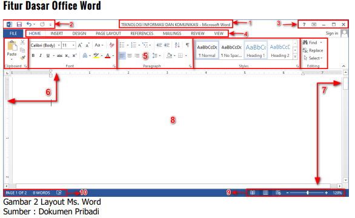
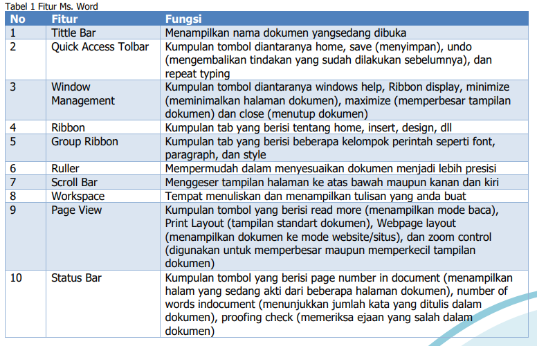
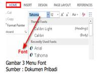
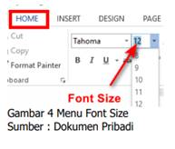
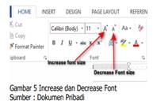
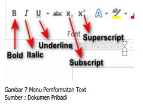
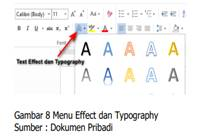

Pokok Bahasan
- MESIN PENCARIAN INFORMASI DIGITAL
- APLIKASI PENGOLAH KATA
- APLIKASI PRESENTASI/POWER POINT
- PERANGKAT KERAS KOMPUTER
- PERANGKAT LUNAK KOMPUTER
MESIN PENCARIAN INFORMASI DIGITAL
Mesin pencari web merupakan layanan computer yg dibuat & dipakai untuk melakukan pencarian data atau liputan yg tersimpan pada layanan www, ftp, publikasi milis & lain lain. Dewasa ini mesin pencari yg telah terdapat antara lain :
1. Google
Informasi digital adalah informasi yang memanfaatkan media atau alat elektronik untuk mendapatkan dan menyampaikan suatu berita, data maupun informasi. Jenis-jenis informasi digital yang sering digunakan yaitu melalui email, chatting, aplikasi pertemuan daring (zoom, google meet) pembahasan lebih lanjut pada bab system komputasi sub bab Google Drive.
2. Aplikasi Percakapan (Chating)
Chatting adalah kegiatan berkomunikasi dan berinteraksi melalui Internet. Dengan fitur ini, Anda dapat mengobrol dengan siapa saja kapan saja, di mana saja. Telegram, Messenger YAHOO, dll adalah contoh penggunaan aplikasinya
3. Aplikasi Pertemuan Online
Aplikasi pertemuan online/teleconference merupakan aplikasi yang dapat digunakan untuk mengadakan suatu pertemuan atau komunikasi dimanapun dan kapanpun via internet yang tidak mengharuskan anda untuk bertemu langsung satu sama lain. Aneka aplikasi ini memungkinkan banyak tersedia di platform ponsel, desktop, maupun ios. Pembahasan lebih lanjut dibahas pada bab Jaringan Komputer Internet.
4. Latihan Pengetahuan
Dalam pembelajaran sumber belajar bisa didapatkan dari mana saja salah satunya adalah internet. Siswa diminta untuk mencari dan mengirim informasi melalui internet.
APLIKASI PENGOLAH KATA
Microsoft word merupakan salah satu perangkat lunak pengolah kata yang masih satu keluarga dengan Microsoft Office. Sejauh ini Microsoft word merupakan salah satu aplikasi pengolah kata yang banyak digunakan di hampir semua bidang pekerjaan. Pada Microsoft word anda dapat membuat dokumen, baik dokumen formal maupun non formal dengan sangat mudah. Sebelum anda lebih jauh mempelajari tentang ms word terlebih dahulu anda harus mengetahui fitur-fitur dasar yang terdapat dalam workspace ms. Word 2013 digunakan pada system operasi windows.
 Dengan adanya fitur-fitur tersebut anda bisa memanfaatkan diantaranya:
Font dan Paragraf
Pada tab Home anda akan menjumpai ribbon font dan ribbon paragraph. Ribbon font berisi sekumpulan menu yang dapat anda gunakan untuk merubah dan memodifikasi tulisan, sedangkan pada ribbon paragraph terdapat sekumpulan menu yang dapat anda gunakan untuk mengatur tata letak, jarak dan penomoran pada paragraph.
- Font Pada menu font terdapat beberapa menu dengan masing-masing fungsi, antara lain :
- Font digunakan untuk memilih jenis huruf yang akan anda gunakan 
- Font Size digunakan untuk menentukan ukuran huruf 
- Increase font size digunakan untuk memperbesar tulisan
- Decrease font size digunakan untuk memperkecil 
- Bold digunakan untuk menebalkan tulisan, shortcut yang digunakan CTRL+B
- Italic digunakan untuk memiringkan tulisan, shortcut yang digunakan CTRL+I
- Underline digunakan untuk memberikan garis bawah pada tulisan, shortcut yang digunakan CTRL+U
- Subscript digunakan untuk pemformatan huruf yang ditulis lebih kecil dan terletak sedikit ke bawah
- Superscript digunakan untuk pemformatan huruf yang ditulis lebih kecil dan terletak sedikit ke atas 
- Text effect dan typography digunakan untuk memberikan gaya dan efek tertentu pada tulisan yang anda buat 
- Text highlight color digunakan untuk memberikan warna latar tulisan yang anda buat
- Font color digunakan untuk merubah warna pada text atau tulisan yang anda buat
.jpg)
.jpg)
Paragraph
Menurut KKBI Paragraf adalah bagian bab dalam suatu karangan (biasanya mengandung satu ide pokok dan penulisannya dimulai dengan garis baru); alinea. Pada ms word menu paragraph terdapat berbagai menu dengan masing-masing fungsi yang berbeda, diantaranya:

- Bullets digunakan untuk memberikan tanda bullets pada kalimat atau paragraph yang anda buat
- Numbering digunakan untuk memberikan nomor pada kalimat atau paragraph yang anda buat
- Multilevel list digunakan untuk membuat daftar item dengan level yang berbeda-beda
- Align Left digunakan untuk membuat posisi teks atau paragraph menjadi rata kiri
- Center digunakan untuk membuat posisi teks atau paragraph menjadi rata tengah
- Align Right digunakan untuk membuat posisi teks atau paragraph menjadi rata kanan
- Justify digunakan untuk membuat posisi teks atau paragraph menjadi rata kanan kiri
- Line and paragraph spacing digunakan untuk menentukan spasi atau jarak antar baris dalam satu paragraph maupun antar paragraf. Untuk menentukan spasi pada baris juga bias dilakukan dengan memilih line spacing options
- Shading digunakan untuk memberi warna pada latar atau background tulisan yang anda buat


Find, Replace, Select dan Editing
- Find digunakan untuk mencari kata atau kalimat yang ingin anda cari pada dokumen yang anda buat tanpa harus scroll ke atas atau bawah. Shortcut yang digunakan CTRL+F
- Replace digunakan untuk mengganti kata atau kalimat pada halaman dokumen anda buat
- Select digunakan untuk memilih suatu objek atau kalimat yang terdapat pada dokumen

Insert
Di dalam menu insert anda dapat membuat beberapa pekerjaan diantaranya adalah:
- Table (Membuat dan memodifikasi tabel)
Tabel biasanya digunakan untuk menyajikan data dalam bentuk lajur kolom dan baris secara berurutan, langkah untuk membuat table sebagai berikut: - Membuat tabel
- Menggabungkan Cell
- Style Table
- Menyisipkan Ilustrasi Pada ms word untuk menyisipkan berbagai macam ilustrasi seperti pictures, online pictures, shapes, smartart graphic, chart, dan screenshoot dapat dilakukan di tab insert.
a) Pilih menu tab insert
b) Pilih table
c) Tentukan jumlah baris (row) dan kolom (column) yang kalian inginkan.

d) Setelah anda membuat table, anda juga dapat memodifikasi table diantaranya menambahkan baris dan kolom. Untuk menambah baris dan kolom letakkan kursor pada salah satu kolom kemudian klik kanan pilih insert, tambahkan kolom dan baris sesuai dengan kebutuhan
e) Insert column to the left digunakan untuk menambahkan tabel pada sebelah kiri
f) Insert column to the right digunakan untuk menambahkan tabel pada sebelah kanan
g) Insert rows above digunakan untuk menambahkan baris diatasnya
h) Insert Rows bellow digunakan untuk menambahkan baris dibawahnya
Menggabungkan cell adalah menggabungkan dua atau lebih cell menjadi satu, langkah-langkah mengabungkan cell adalah sebagai berikut:
a) Pada table berikut, kita tambahkan 1 kolom diatas kolom No sampai nilai harian 1 dan 3

b) Blok cell yang akan anda gabungkan kemudian klik kanan pilih merge cell

c) Untuk mengubah posisi huruf agar center maka blok tulisan tersebut kemudian pilih layout dan klik align center

d) Maka hasilnya

Style table dapat digunakan untuk mempercatik table agar terlihat lebih menarik, Langkah - langkahnya sebagai berikut:
a) Klik di salah satu table yang akan anda rubah stylenya
b) Pilih tab design dan kemudian pilih salah satu style yang akan anda gunakan

Langkah-langkah untuk menyisipkan ilustrasi adalah sebagai berikut:
Menyisipkan gambar
1. Siapkan teks yang akan kita sisipi gambar
2. Pilih tab insert kemudian pilih jenis ilustrasi yang anda inginkan, disini kita mencoba untuk memasukkan gambar

3. Setelah itu atur tata letak gambar sesuai yang anda inginkan dengan cara klik gabar yang telah kita insert kemudian pilih tab format dan pilih position

4. Jika sudah maka akan mendapatkan hasil seperti dibawah ini

APLIKASI PENGOLAH ANGKA
Microsoft excel merupakan salah satu perangkat lunak pengolah angka yang masih satu keluarga dengan Microsoft Office. Sejauh ini Microsoft excel merupakan salah satu aplikasi pengolah angka yang banyak digunakan di hampir semua bidang, mulai dari perkantoran sampai dunia pendidikan. Pada Microsoft excel anda dapat mengerjakan perhitungan, pengolahan data, menganalisa dan mengolah data.
- Fitur Dasar Ms. Excel Sebelum anda lebih jauh mempelajari ms excel terlebih dahulu anda harus mengetahui fitur data yang terdapat dalam worksheet ms. Excel
- Fitur Lanjut Ms. Excel
- Diagram Alir


Setelah anda mengerti fitur-fitur dasar yang terdapat dalam ms. Excel sekarang mari kita coba untuk mengelola informasi
a. Fitur Autofit
Fitur ini digunakan untuk mengubah lebar dan tinggi kolom sesuai dengan ukuran teks dari masing - masing kolom. Langkah yang harus anda lakukan yaitu blok semua kolom yang akan anda sesuaikan ukurannya kemudian masuk ke menu home dan pilih format

b. Adjust Size
Untuk membuat ukuran baris dan kolom menjadi sama secara bersamaan dapat dilakukan dengan cara berikut :
1) Klik tombol select all kemudian arahkan cursor ke salah satu kolom dan baris
2) Tarik sesuaikan dengan kebutuhan

c. Pemformatan Nomor
Pada ms excel kita dapat menentukan penomoran sesuai dengan apa yang kita butuhkan mulai dari nomor, mata uang, hari, waktu dll. Langkah yang harus anda lakukan yaitu klik kanan pada salah atu kolom yang akan anda format kemudian pilih format cell dan pilih penomoran sesuia yang anda butuhkan.


Adapun fitur format cell dijelaskan sebagai berikut :
1) General digunakan untuk menuliskan angka-angka standart
2) Number digunakan untuk menuliskan angka decimal yang dengan disertai beberapa angka dibelakang koma
3) Currenty digunakan untuk menuliskan mata uang dengan menyertakan symbol sesuai dengan Negara masing-masing
4) Accounting digunakan untuk menuliskan mata uang dengan menyertakan symbol tiap Negara dan terdapat spasi antara symbol dan angka
5) Date digunakan untuk menuliskan hari dan bisa disesuai dengan lokasi Negara masing-masing
6) Time digunakan untuk menuliskan waktu dan bisa disesuai dengan lokasi Negara masing-masing
7) Percentace digunakan untuk menuliskan angka decimal dengan imbuhan symbol persentase dibelakangnya
8) Fraction digunakan untuk menuliskan angka pecahan seperti 8/16 dll
9) Scientific digunakan untuk menampilkan angka dalam notasi ilmiah atau eksponensial
10) Text digunakan untuk menuliskan text
11) Special digunakan untuk menuliskan symbol special dan bias memilih sesuai lokasi Negara masing - masing
12) Custom digunakan untuk memberikan pemformatan angka tertentu dengan tampilan custom
d. Grafik
Pada Excel anda dapat menemukan fitur untuk membuat grafik dan diagram dengan berbagai bentuk. Untuk melihat berbagai macam pilihan grafik, anda dapat melihat pada menu insert kemudian klik chart.

Sekarang mari kita coba untuk membuat salah satu grafik. Hal yang harus anda persiapkan adalah
1) Siapkan data
2) Blok data dan judul yang ingin anda masukkan
3) Klik menu insert pilih chart kemudian pilih grafik sesuai yang anda inginkan

a. Formula
Pada ms. Excel juga menyediakan formula untuk menghitung, mengurangi, menambah dan membagi. Kita akan mencoba untuk menggunakan formula dasar yaitu :

b. Fungsi Umum
Di dalam Excel, fungsi yang paling umum digunakan yaitu :
1) SUM digunakan untuk menentukan penjumlahan
2) AVERAGE digunakan untuk mencari rata-rata suatu variabel
3) MAX digunakan untuk mencari nilai tertinggi dari suatu variabel
4) MIN digunakan untuk mencari nilai terendah dari suatu variable Setelah anda mengetahui beberapa fungsi dasar pada excel sekarang mari kita coba untuk menggunakan fitur AutoSum yang telah disediakan oleh excel.

Langkah – langkah menggunakan fitur Auto Sum adalah
1) Buatlah data seperti gambar 65 berikut
2) Pilih cell yang akan dijumlahkan, misal cell B5-E5
3) Klik menu tab Home kemudian pilih AutoSumàSum
4) Hasilnya terlihat seperti gambar berikut

c. Fungsi Logika If
Fungsi logika IF digunakan untuk melihat perbandingan logis antara perkiraan dan nilai tertentu dimana kondisi tersebut sudah kita tentukan. Sebagai contoh kita akan melihat hasil target penjualan dari tiap bulan, dimana setiap bulan penjualan harus mencapai 70 unit computer.

Langkah yang harus dilakukan untuk mendapatkan hasil seperti diatas yaitu :
1. Buatlah tabulasi data seperti gambar 67
2. Ketikkan rumus =IF(F5>=80,”TERCAPAI”,”Tidak TERCAPAI”) pada kolom G5 dengan keterangan Jika jumlah penjualan pada kolom F5 lebih dari atau sama dengan 70 maka target penjualan dianggap sudah TERPENUHI, tetapi jika belum maka dianggap TIDAK TERPENUHI. Tekan Enter
3. Ulangi poin 2 pada cell G6
c. Fungsi Library
Untuk mempelajari aplikasi pengolah angka, kita dapat memanfaatkan Function Library yang terdapat pada menu formula dalam excel.

Adapun fungsi – fungsi yang terdapat pada Library antara lain:
1) Insert Function digunakan untuk mencari fungsi dengan sebuah kata kunci
2) AutoSum digunakan untuk membuat fungsi umum seperti SUM, AVERAGE, MAX, MIN secara otomatis
3) Recently Used digunakan untuk melihat fungsi yang baru saja kita gunakan
4) Financial digunakan untuk perhitungan keuangan
5) Logical digunakan untuk perhitungan logika
6) Text digunakan untuk mengolah teks menjadi perubhan tertentu
7) Date &Time digunakan untuk mengelola tangggal dan waktu
8) Lookup dan Reference
9) Math & Trig digunakan untk menentukan argument matematika
10) More Functions fungsi tambahan untuk bidang lain misal engineering dll
Menggunakan Ms Word Diagram alir atau flowchart adalah diagram yang mengambarkan langkah-langkah yang berurutan yang diimplementasikan dengan menggunakan symbol-simbol. Simbol-simbol pada flowchart menggambarkan aktivitas tertentu yang membantu kita untuk memahami proses atau alur kerja yang sesuai. Langkah-langkah untuk membuatnya adalah sebagai berikut:
1) Klik Insert dan pilih New Drawing Canvas.
Kita pilih menggunakan canvas baru dengan salah satu tujuannya adalah untuk memudahkan memindahkan diagram dengan menggeser Drawing Canvas-nya saja dan untuk memermudah memperbesar/memperkecil ukuran semua simbol dengan mengatur ukuran Drawing Canvas-nya
2) Setelah itu gambar flowchart di dalam canvas dengan klik Insert – Shapes – Flowchart

3) Pilih symbol sesuai yang anda butuhkan.
4) Untuk mengisikan tulisan di setiap symbol yang kita pilih klik kanan pada symbol kemudian pilih add text dan isikan kalimat yang sesuai untuk diagram tersebut.

5) Hasil flowchart di dalam Drawing Canvas

APLIKASI PRESENTASI/POWER POINT
Microsoft power point merupakan salah satu perangkat lunak Microsoft Office yang digunakan untuk melakukan presentasi. Menurut KBBI Presentasi adalah menyampaikan, menyajikan dan mengemukakan informasi kepada seseorang. Dalam penyampaian informasi tentu saja dibutuhkan media yang dapat menarik para audien salah satunya yaitu slide power point. Sejauh ini power point digunakan hampir di semua bidang mulai dari perkantoran, pemerintahan sampai dunia pendidikan.


Adapun fitur yang terdapat pada powerpoint, antara lain:
a. Membuat Slide Baru Untuk membuat slide baru langkah yang harus anda lakukan adalah
1) Klik menu home kemudian plih new slide.
2) Pilih slide sesuai dengan kebutuhan anda
3) Tuliskan Judul dan isi presentasi yang dikehendaki
b. Design
Design pada Microsoft Powerpoint digunakan untuk menentukan tema atau latar belakang pada halaman slide. Jika sudah selesai menuliskan isi presentasi maka langkah selanjutnya adalah memilih design yang diinginkan.
PERANGKAT KERAS KOMPUTER
Komponen Perangkat Input
Komponen Perangkat Output
A. Keyboard
Keyboard atau papan ketik merupakan salah satu perangkat masukan/input pengolahan data yang terhubung dengan komputer. Keyboard dapat berfungsi memasukkan huruf, angka, karakter khusus dan sebagai media bagi pengguna untuk melakukan perintah khusus lainnya seperti shortcut untuk menyimpan, membuka, menghapus, memindahkan, meng-copy, dll. Jenis-jenis keyboard:
1) QWERTY;
2) DVORAK;
3) KLOCKENBERG.
B. Mouse
Mouse memiliki fungsi untuk perpindahan pointer atau kursor. Selain itu, dapat digunakan sebagai perintah praktis dan cepat dibandingkan dengan keyboard. Fitur umum yang ada pada mouse adalah 2 buah klik yaitu kiri dan kanan, serta sebuah scroll guna untuk melihat tampilan yang masih tertutup oleh tampilan layar dengan cara scroll atas dan scroll bawah. Terdapat beberapa kasus dimana kita harus memindahkan sebuah elemen, berkas, atau file ke dalam suatu tempat, maka mouse dapat digunakan untuk melakukan drag and drop pada elemen tersebut dengan menekan klik kiri tanpa melepasnya dan meletakkannya pada lokasi target
C. Touchpad
Touchpad adalah sebuah perangkat yang memiliki fungsi sama dengan mouse yaitu untuk melakukan perpindahan pointer atau kursor. Namun yang membedakan adalah perangkat ini biasa tertanam pada laptop.
D. Scanner
Scanner adalah sebuah alat yang dapat berfungsi untuk menduplikasi atau menyalin gambar atau teks yang kemudian disimpan ke dalam memori komputer, kemudian berikutnya akan disimpan dalam harddisk ataupun floppy disk. Perangkat scanner bisa dibilang seperti mesin fotocopy, perbedaannya adalah pada mesin fotocopy hasilnya hanya dapat dilihat dari kertas yang dikeluarkan sementara scanner hasilnya dapat ditampilkan melalui layar monitor terlebih dahulu agar kita dapat melakukan perbaikan atau modifikasi jika diperlukan dan kemudian dapat disimpan kembali dalam bentuk file text maupun file gambar.
Perangkat output atau perangkat keluaran merupakan perangkat keras yang digunakan untuk mengkomunikasikan dan menyajikan hasil dari pengolahan data oleh sebuah sistem komputer dan diterima oleh pengguna. Berikut beberapa perangkat output yang perlu kita ketahui:
a. Monitor
Monitor adalah sebuah perangkat output yang digunakan untuk mengirimkan hasil gambar atau display pada sebuah layar dan dilihat oleh pengguna. Monitor ini memiliki kriteria yang berbeda-beda seperti karakteristik, ukuran, dan tipenya yang menyesuaikan kebutuhan pengguna
b. Printer
Printer adalah perangkat yang digunakan untuk menampilkan data berupa teks, gambar atau grafik dalam bentuk cetakan lembar pada kertas. Printer dapat dihubungkan dengan komputer melalui USB atau sinyal Wireless, selain itu printer juga perlu dihubungkan dengan arus listrik sebagai daya powernya. Saat pertama kali disambungkan ke komputer, pada beberapa sistem operasi kita harus menginstall software driver printer terlebih dahulu agar printer itu dapat dikenali oleh komputer namun jika kita menggunakan sistem operasi windows 10 atau MacOs sebenarnya tidak perlu menginstall driver, kita bisa langsung mencetaknya meskipun ada beberapa fitur yang tidak berjalan agar proses pencetakan dapat berjalan dengan maksimal, kita tetap perlu menginstal drivernya.
c. Proyektor
Proyektor atau projector merupakan alat yang biasa digunakan untuk presentasi, perangkat ini dihubungkan dari komputer menggunakan kabel VGA atau HDMI untuk menampilkan apa yang ada pada monitor ke suatu screen (layar) ataupun dinding.
d. Speaker
Speaker adalah perangkat keras sebagai alat bantu untuk menghasilkan suara. Jenis lain dari speaker adalah headset atau earphone hanya saja speaker bisa didengarkan oleh banyak orang sedangkan headset atau earphone hanya perorang saja, penggunaan perangkat ini tentunya bergantung pada kebutuhan penggunanya. Kita dapat mendengarkan hasil keluaran berupa suara dari komputer melalui perangkat ini
PERANGKAT LUNAK KOMPUTER
Perangkat lunak atau bisa disebut dengan software adalah sebuah data pada sebuah sistem komputer yang disimpan secara digital, termasuk program komputer dari berbagai informasi yang dapat dibaca dan ditulis oleh komputer. Hal ini menjadikan bahwa bagian sistem komputer pada perangkat lunak tidak memiliki wujud secara fisik. Perlu diketahui perangkat lunak juga memiliki beberapa bagian atau jenis sesuai dengan kegunaan dan penggunaannya.
Contoh perangkat lunak komputer:
1. Windows
Windows adalah sebuah Sistem Operasi yang sangat terkenal dan paling banyak digunakan terutama bagi pengguna di Indonesia. Banyak perusahaan, institusi, organisasi, maupun pribadi yang memilih windows dengan alasan karena terbiasa dan lebih mudah digunakan.
2. Linux Sistem
Operasi Linux adalah sebuah sistem operasi yang bersifat open source atau gratis. Dalam hal ini, pengembangan linux dapat dilakukan secara bebas dan dapat didistribusikan tanpa memerlukan lisensi apapun. Menjadi keunggulan pada Linux karena mampu menjadi alternatif untuk digunakan selain sistem operasi windows yang begitu mahal dan tidak rentan akan serangan-serangan virus.
3. MacOS
MacOS adalah salah satu produk sistem operasi yang dikembangkan oleh Apple Inc dimana pada sistem operasi ini memiliki antarmuka secara grafis yang sangat baik dan cepat. Sistem operasi ini biasanya sudah tertanam pada produk laptop atau notebook perusahaan Apple yaitu macBook.